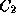

Common Lisp the Language, 2nd Edition


Next: Declarative Method Combination
Up: Method Selection and
Previous: Determining the Effective

Standard
method combination is supported by the class
standard-generic-function.
It is used if no other type of method
combination is specified or if the built-in method combination type
standard is specified.
Primary methods define the main action of the effective method,
while auxiliary methods modify that action in one of three ways.
A primary method has no method qualifiers.
An auxiliary method is a method whose method qualifier is
:before, :after, or :around. Standard method combination
allows no more than one qualifier per method; if a method definition
specifies more than one qualifier per method, an error is signaled.
-
A :before method has the keyword :before as its
only qualifier. A :before method specifies code that is to be
run before any primary method.
-
An :after method has the keyword :after as its only
qualifier. An :after method specifies code that is to be run
after primary methods.
-
An :around method has the keyword :around as its only
qualifier. An :around method specifies code that is to
be run instead of other applicable methods but that is
able to cause some of them to be run.
The semantics of standard method combination are as follows:
- If there are any :around methods, the most specific
:around method is called. It supplies the value or values of the
generic function.
- Inside the body of an :around method,
call-next-method can be used to call the next method. When the next
method returns, the :around method can execute more code,
perhaps based on the returned value or values. The generic function
no-next-method is invoked if call-next-method is used and
there is no applicable method to call. The function
next-method-p may be used to determine whether a next method exists.
-
If an :around method invokes call-next-method, the next
most specific :around method is called, if one is applicable.
If there are no :around methods or if
call-next-method is called by the least specific :around
method, the other methods are called as follows:
- All the :before methods are called, in
most-specific-first order. Their values are ignored.
An error is signaled if call-next-method is used in a
:before method.
- The most specific primary method is called. Inside the
body of a primary method, call-next-method may be used to call
the next most specific primary method. When that method returns, the
previous primary method can execute more code, perhaps based on the
returned value or values. The generic function no-next-method
is invoked if call-next-method is used and there are no more
applicable primary methods. The function next-method-p may be
used to determine whether a next method exists. If
call-next-method is not used, only the most specific primary method
is called.
- All the :after methods are called in
most-specific-last order. Their values are ignored.
An error is signaled if call-next-method is used in an
:after method.
- If no :around methods were invoked, the most
specific primary method supplies the value or values returned by the
generic function. The value or values returned by the invocation of
call-next-method in the least specific :around method are
those returned by the most specific primary method.
In standard method combination, if there is an applicable method
but no applicable primary method, an error is signaled.
The :before methods are run in most-specific-first order and
the :after methods are run in least-specific-first order. The
design rationale for this difference can be illustrated with an
example. Suppose class modifies the behavior of its
superclass, , by adding :before and :after
methods. Whether the behavior of the class is defined
directly by methods on or is inherited from its superclasses
does not affect the relative order of invocation of methods on
instances of the class . Class 's :before
method runs before all of class 's methods. Class 's :after method runs after all of class 's methods.
By contrast, all :around methods run before any other methods
run. Thus a less specific :around method runs before a more
specific primary method.
If only primary methods are used and if call-next-method is not
used, only the most specific method is invoked; that is, more specific
methods shadow more general ones.

Next: Declarative Method Combination
Up: Method Selection and
Previous: Determining the Effective
AI.Repository@cs.cmu.edu